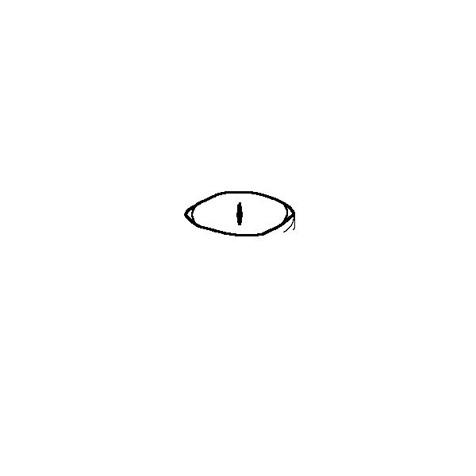

For my animated eye, I did the best I could. As someone with roots in audio, I find visual art very challenging. I did have fun pushing myself and creating this GIF. Animation is tedious but rewarding.
